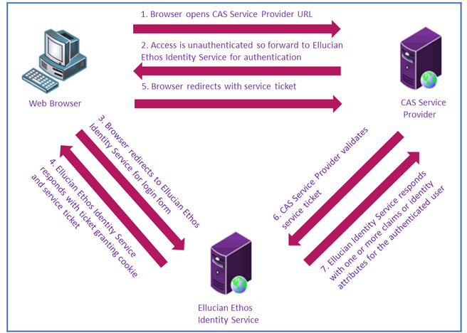
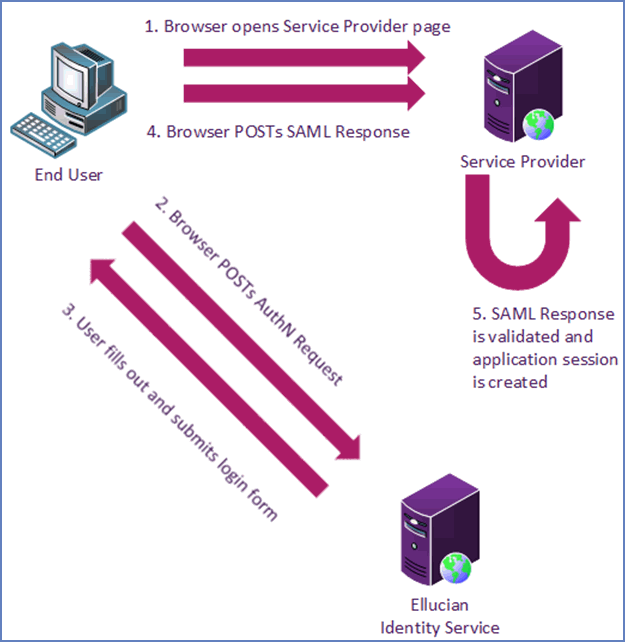
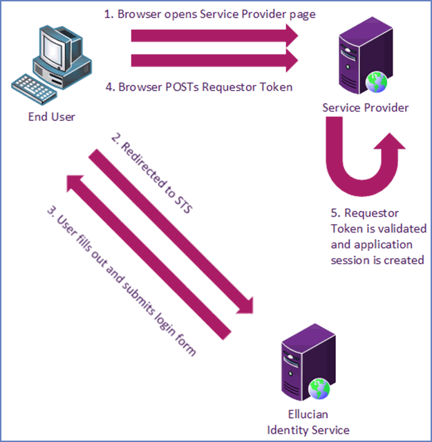

Configure Applications for Ethos Identity
Ellucian Ethos Identity requires each supported application to be created as an Applications and configured for the appropriate protocol.
Service providers can require different configurations for application and protocol combinations. These procedures describe configurations for CAS, SAML 2.0, and WS-Federation. For more information, refer to Applications on the WSO2 documentation website for the corresponding WSO2 version.
Configure CAS based applications
Central Authentication Service (CAS) is a ticket-based single sign-on protocol maintained by JA-SIG. Ellucian Ethos Identity supports the CAS protocol specification, which is used by some Ellucian products.

Supported CAS protocols
The following CAS protocols are supported by Ellucian Ethos Identity.
| Protocol | Supports |
|---|---|
| Login | /login Supports TARGET and SAMLart arguments for legacy SAML clients |
| Logout | /logout
|
| Proxy Ticket | /proxy [CAS 2.0] |
| Ticket Validation |
|
CAS single logout
CAS single logout capability is not supported by all service provider applications, it is not set by default, and it generates extraneous traffic.
If you want a service provider to use the CAS single logout capability, you must set the Enable Single Logout option on the CAS configuration panel for that service provider in the Management Console.
Configure attribute mapping
An application might require specific user store attributes that must be passed to the application. Ellucian Ethos Identity provides some default attribute that map to user store attributes. You might need to add attribute, or change the existing mappings to point to a different attribute in your directory server.
Procedure
Add CAS based applications
Add a CAS based applications definition in the WSO2 Identity Server Console.
Procedure
(Optional) Make an applications visible to additional administrators
For an applications to be visible to an administrator, that user must either have created that applications or be assigned the role associated with the applications.
About this task
- Perform the procedure below to assign that role to other users, so that multiple users can view and maintain the applications.
- Always log in as the same user (for example, the administrator created by Ellucian Ethos Identity) to add or maintain applications.
Procedure
Add CAS configuration
After mapping the identity claims, add the CAS Service URL for the integrating application.
Procedure
-
Select the required CAS application to configure or click Edit icon
 .
.
Configure Banner 8 applications
Configure Banner 9.x applications
Configure SAML 2.0 based application
Security Assertion Markup Language (SAML) is an XML-based standard for exchanging authentication and authorization data between security domains. Ellucian Ethos Identity supports the SAML 2.0 Web Browser SSO Profile, which involves an identity provider, a service provider, and a principal with an HTTP user agent.
The following diagram depicts the login and SAML Response validation process for a SAML 2.0 service provider against Ellucian Ethos Identity.

Import and export certificate using Ellucian Ethos Identity management console
Applications often require information to be digitally signed or encrypted when communicating with Ellucian Ethos Identity.
To facilitate secure communication, both applications exchange digital certificates. Certificate exchange entails exporting the public certificate from the keystore of one application and importing it into the keystore of the other application.
Export the Ellucian Ethos Identity public certificate
Export the public certificate from the Ellucian Ethos Identity keystore into the service provider to support secure communication.
Procedure
-
Select the required SAML application to configure or click Edit icon .
Import the Ellucian Ethos Identity public certificate
Import the service provider public certificate into the Ellucian Ethos Identity to support secure communication.
Procedure
- Log in to the Console.
- In the Management Console, click the Main tab.
- Go to .
- On the intended keystore, under Action column, click Import Cert.
- On the Import Certificates To page, click Choose File, select the Service Provider certificate file, and then click Open.
- Click Import.
Configure attribute mapping
An application might require specific user store attributes that must be passed to the application. Ellucian Ethos Identity provides some default attribute that map to user store attributes. You might need to add attribute, or change the existing mappings to point to a different attribute in your directory server.
Procedure
Add an application with SAML
Add an application definition in the WSO2 Identity Server Console.
Procedure
(Optional) Make an applications visible to additional administrators
For an applications to be visible to an administrator, that user must either have created that applications or be assigned the role associated with the applications.
About this task
- Perform the procedure below to assign that role to other users, so that multiple users can view and maintain the applications.
- Always log in as the same user (for example, the administrator created by Ellucian Ethos Identity) to add or maintain applications.
Procedure
Add SAML configuration
Add the SAML settings for the integrating application.
Procedure
-
Select the required SAML application to configure or click Edit icon .
Field Description Name* Enter a name that uniquely identifies the application. Example: MyApplication
Description Enter a description for an application. Logo Enter an image URL for the application. If the URL is not available, a generated thumbnail will be displayed instead.
The image recommended size is: 200x200 pixels.Discoverable application Select the Discoverable application check box, if the customers want to access the application through the My Account portal. Access URL Enter the landing page URL for this application. Delete Click Delete if want to delete the application. Note: After deleting the application, it cannot be restored, and any clients relying on this application will cease to function.Note: * indicates a required field.
Modify identity provider issuer
Change the Identity Provider Entity Id to the expected URI of the Issuer statement in SAML 2.0 Responses.
About this task
update-resident-idp command during initial configuration. If you need to update the identity provider issuer, perform the following procedure.Procedure
- Log in to the Management Console.
- Click the Main tab.
- Under Identity Providers, click Resident.
- Expand .
- In the Identity Provider Entity ID field, enter a valid identity provider name or URI that will be used by all service providers.
- Click Update to save the settings.
Configure Colleague Self-Service
Colleague Self-Service is built on ASP.NET MVC technology and leverages SAML 2.0 SSO for single sign-on.
Procedure
Configure Google Apps
Google Apps for Work (formerly Google Apps for Business) is a suite of cloud computing productivity and collaboration software tools and software offered on a subscription basis by Google. It includes Google's web applications Gmail, Google Drive, Google Hangouts, Google Calendar, and Google Docs.
Procedure
Configure Google Apps to use Ellucian Ethos Identity as IDP
Allow Google Apps to use Ellucian Ethos Identity as its primary identity provider.
Procedure
Configure WS-Federation service providers
WS-Federation is a federation protocol that allows different security realms to provide authorized access to resources managed in other realms. This protocol builds on the WS-Security, WS-Trust, and WS-* specifications. Ellucian Ethos Identity supports WS-Federation Passive Requestor Profile, where the web browser is a passive requestor.
The following diagram depicts the login and requestor token validation process for a WS-Federation service provider against Ellucian Ethos Identity.

Import and export certificate using Ellucian Ethos Identity management console
Applications often require information to be digitally signed or encrypted when communicating with Ellucian Ethos Identity.
To facilitate secure communication, both applications exchange digital certificates. Certificate exchange entails exporting the public certificate from the keystore of one application and importing it into the keystore of the other application.
Export the Ellucian Ethos Identity public certificate
Export the public certificate from the Ellucian Ethos Identity keystore into the service provider to support secure communication.
Procedure
-
Select the required SAML application to configure or click Edit icon .
Import the Ellucian Ethos Identity public certificate
Import the service provider public certificate into the Ellucian Ethos Identity to support secure communication.
Procedure
- Log in to the Console.
- In the Management Console, click the Main tab.
- Go to .
- On the intended keystore, under Action column, click Import Cert.
- On the Import Certificates To page, click Choose File, select the Service Provider certificate file, and then click Open.
- Click Import.
Configure attribute mapping
An application might require specific user store attributes that must be passed to the application. Ellucian Ethos Identity provides some default attribute that map to user store attributes. You might need to add attribute, or change the existing mappings to point to a different attribute in your directory server.
Procedure
Add a service provider
Add a service provider definition in the WSO2 Identity Server Console.
Procedure
(Optional) Make an applications visible to additional administrators
For an applications to be visible to an administrator, that user must either have created that applications or be assigned the role associated with the applications.
About this task
- Perform the procedure below to assign that role to other users, so that multiple users can view and maintain the applications.
- Always log in as the same user (for example, the administrator created by Ellucian Ethos Identity) to add or maintain applications.
Procedure
Add Passive STS realm
Add the Passive STS realm for the integrating application.
Procedure
- Log in to the Management Console.
- Click the Main tab.
- Go to .
- In the row for the service provider, click Edit.
- Expand .
- In the Passive STS Realm field, enter the URI or URL of the target application deployment.
- In the Passive STS WReply URL field, enter the URI or URL of the federation recipient.
- Click Update.
(Optional) Modify STS timeout
The Security Token Service (STS) timeout determines how long the session token is valid. If this value is too low, SharePoint service providers can request tokens more frequently and experience degraded performance.
Procedure
(Optional) Modify STS issuer
If the service provider requires a URI for the issuer of the WS-Federation response, set the issuer to the base URL of the Ellucian Ethos Identity instance.
Procedure
Bind service provider to user store
Ethos Identity allows for setup multiple user stores. There should be one primary user store (mandatory) and any number of secondary user stores(optional).